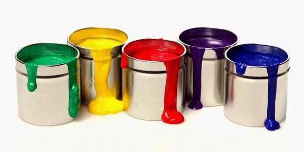
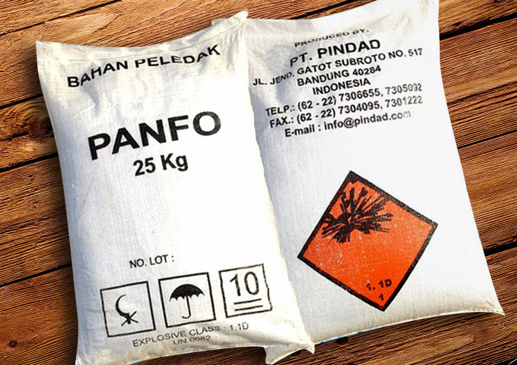
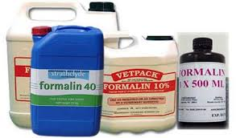

Methanol has many industrial and scientific uses
>
> One of the most common uses of methanol is as an ingredient for formaldehyde. This chemical which can be derived from methanol is used extensively in the production of plastics, including those used in construction materials, car parts, paints, explosives, and wrinkle-resistant artificial fabrics. Formaldehyde is also used by morticians and scientists to preserve corpses and laboratory specimens.
Methanol can be used to make other useful solvents including acetic acid, dimethyl ether, and propylene, which is used in anti-freeze. Methanol itself can also be an ingredient in anti-freeze. Fuel for both gasoline-powered and biodiesel vehicles can include methanol. Its highly flammable nature and usefulness as a solvent allows it to assist other fuels in blending and igniting. Pure methanol has even been used by itself as a fuel for race cars. It produces high speeds,but also led to a devastating fire which killed two American race car drivers. Methanol fires are especially dangerous because they are extremely easy to spark, and the flames are almost invisible. This allows the fires to spread out of control and catch other materials very quickly. <
  